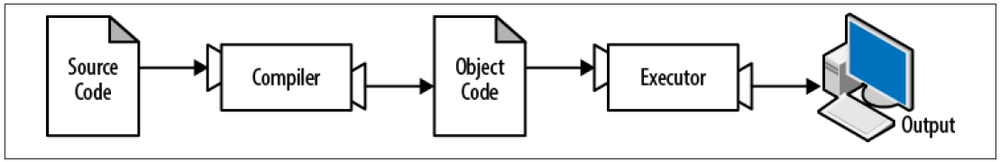
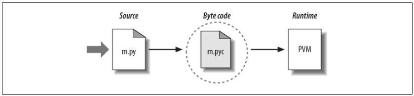

The Python Programming Language
The programming language you will learn is Python. Python is an example of a highlevel language; other high-level languages you might have heard of are C, C++, Perl, and Java. There are also low-level languages, sometimes referred to as “machine languages” or “assembly languages.” Loosely speaking, computers can only run programs written in low-level languages. So programs written in a high-level language have to be processed before they can run. This extra processing takes some time, which is a small disadvantage of high-level languages.
The advantages are enormous. First, it is much easier to program in a high-level lan guage. Programs written in a high-level language take less time to write, they are shorter and easier to read, and they are more likely to be correct. Second, high-level languages are portable, meaning that they can run on different kinds of computers with few or no modifications. Low-level programs can run on only one kind of computer and have to be rewritten to run on another.
Due to these advantages, almost all programs are written in high-level languages. Lowlevel languages are used only for a few specialized applications.
Two kinds of programs process high-level languages into low-level languages: interpreters and compilers. An interpreter reads a high-level program and executes it, meaning that it does what the program says. It processes the program a little at a time, alternately reading lines and performing computations. Figure 1-1 shows the structure of an interpreter.
A compiler reads the program and translates it completely before the program starts running. In this context, the high-level program is called the source code, and the translated program is called the object code or the executable. Once a program is com piled, you can execute it repeatedly without further translation. Figure 1-2 shows the structure of a compiler.

Python is considered an interpreted language because Python programs are executed by an interpreter. There are two ways to use the interpreter: interactive mode and script mode. In interactive mode, you type Python programs and the interpreter displays the result: >>> 1 + 1 2 The chevron, >>>, is the prompt the interpreter uses to indicate that it is ready. If you type 1 + 1, the interpreter replies 2.
Alternatively, you can store code in a file and use the interpreter to execute the contents of the file, which is called a script. By convention, Python scripts have names that end with .py. To execute the script, you have to tell the interpreter the name of the file. If you have a script named dinsdale.py and you are working in a UNIX command window, you type python dinsdale.py. In other development environments, the details of executing scripts are different. You can find instructions for your environment at the Python web site http://python.org. Working in interactive mode is convenient for testing small pieces of code because you can type and execute them immediately. But for anything more than a few lines, you should save your code as a script so you can modify and execute it in the future.
Source:
Think Python by Allen B. Downey - 2012
Python’s View
The brief description in the prior section is fairly standard for scripting languages, and it’s usually all that most Python programmers need to know. You type code into text files, and you run those files through the interpreter. Under the hood, though, a bit more happens when you tell Python to “go.” Although knowledge of Python internals is not strictly required for Python programming, a basic understanding of the runtime structure of Python can help you grasp the bigger picture of program execution. When you instruct Python to run your script, there are a few steps that Python carries out before your code actually starts crunching away. Specifically, it’s first compiled to something called “byte code” and then routed to something called a “virtual machine.”
Byte code compilation
Internally, and almost completely hidden from you, when you execute a program Python first compiles your source code (the statements in your file) into a format known as byte code. Compilation is simply a translation step, and byte code is a lower-level, platform-independent representation of your source code. Roughly, Python translates each of your source statements into a group of byte code instructions by decomposing them into individual steps. This byte code translation is performed to speed execution—byte code can be run much more quickly than the original source code statements in your text file. You’ll notice that the prior paragraph said that this is almost completely hidden from you. If the Python process has write access on your machine, it will store the byte code of your programs in files that end with a .pyc extension (“.pyc” means compiled “.py” source). You will see these files show up on your computer after you’ve run a few programs alongside the corresponding source code files (that is, in the same directories). Python saves byte code like this as a startup speed optimization. The next time you run your program, Python will load the .pyc files and skip the compilation step, as long as you haven’t changed your source code since the byte code was last saved. Python automatically checks the timestamps of source and byte code files to know when it must recompile—if you resave your source code, byte code is automatically re-created the next time your program is run. If Python cannot write the byte code files to your machine, your program still works— the byte code is generated in memory and simply discarded on program exit.* However, because .pyc files speed startup time, you’ll want to make sure they are written for larger programs. Byte code files are also one way to ship Python programs—Python is happy to run a program if all it can find are .pyc files, even if the original .py source files are absent.
The Python Virtual Machine (PVM)
Once your program has been compiled to byte code (or the byte code has been loaded from existing .pyc files), it is shipped off for execution to something generally known as the Python Virtual Machine (PVM, for the more acronym-inclined among you). The PVM sounds more impressive than it is; really, it’s not a separate program, and it need not be installed by itself. In fact, the PVM is just a big loop that iterates through your byte code instructions, one by one, to carry out their operations. The PVM is the runtime engine of Python; it’s always present as part of the Python system, and it’s the component that truly runs your scripts. Technically, it’s just the last step of what is called the “Python interpreter.”

Figure illustrates the runtime structure described here. Keep in mind that all of this complexity is deliberately hidden from Python programmers. Byte code compilation is automatic, and the PVM is just part of the Python system that you have installed on your machine. Again, programmers simply code and run files of statements.
Performance implications
Readers with a background in fully compiled languages such as C and C++ might notice a few differences in the Python model. For one thing, there is usually no build or “make” step in Python work: code runs immediately after it is written. For another, Python byte code is not binary machine code (e.g., instructions for an Intel chip). Byte code is a Python-specific representation.
This is why some Python code may not run as fast as C or C++ code, as described in Chapter 1—the PVM loop, not the CPU chip, still must interpret the byte code, and byte code instructions require more work than CPU instructions. On the other hand, unlike in classic interpreters, there is still an internal compile step—Python does not need to reanalyze and reparse each source statement repeatedly. The net effect is that pure Python code runs at speeds somewhere between those of a traditional compiled language and a traditional interpreted language. See Chapter 1 for more on Python performance tradeoffs.
Source:
Learning Python, Fourth Edition by Mark Lutz - 2009
Python Implementation Alternatives
Really, as this book is being written, there are three primary implementations of the Python language—CPython, Jython, and IronPython—along with a handful of secondary implementations such as Stackless Python. In brief, CPython is the standard implementation; all the others have very specific purposes and roles. All implement the same Python language but execute programs in different ways.
CPython
The original, and standard, implementation of Python is usually called CPython, when you want to contrast it with the other two. Its name comes from the fact that it is coded in portable ANSI C language code. This is the Python that you fetch from http://www .python.org, get with the ActivePython distribution, and have automatically on most Linux and Mac OS X machines. If you’ve found a preinstalled version of Python on your machine, it’s probably CPython, unless your company is using Python in very specialized ways. Unless you want to script Java or .NET applications with Python, you probably want to use the standard CPython system. Because it is the reference implementation of the language, it tends to run the fastest, be the most complete, and be more robust than the alternative systems. Figure 1-3 reflects CPython’s runtime architecture.
Jython
The Jython system (originally known as JPython) is an alternative implementation of the Python language, targeted for integration with the Java programming language. Jython consists of Java classes that compile Python source code to Java byte code and then route the resulting byte code to the Java Virtual Machine (JVM). Programmers still code Python statements in .py text files as usual; the Jython system essentially just replaces the rightmost two bubbles in Figure 1-3 with Java-based equivalents. Jython’s goal is to allow Python code to script Java applications, much as CPython allows Python to script C and C++ components. Its integration with Java is remarkably seamless. Because Python code is translated to Java byte code, it looks and feels like a true Java program at runtime. Jython scripts can serve as web applets and servlets, build Java-based GUIs, and so on. Moreover, Jython includes integration support that allows Python code to import and use Java classes as though they were coded in Python. Because Jython is slower and less robust than CPython, though, it is usually seen as a tool of interest primarily to Java developers looking for a scripting language to be a frontend to Java code.
IronPython
A third implementation of Python, and newer than both CPython and Jython, IronPython is designed to allow Python programs to integrate with applications coded to work with Microsoft’s .NET Framework for Windows, as well as the Mono open source equivalent for Linux. .NET and its C# programming language runtime system are designed to be a language-neutral object communication layer, in the spirit of Microsoft’s earlier COM model. IronPython allows Python programs to act as both client and server components, accessible from other .NET languages. By implementation, IronPython is very much like Jython (and, in fact, was developed by the same creator)—it replaces the last two bubbles in Figure 1-3 with equivalents for execution in the .NET environment. Also, like Jython, IronPython has a special focus—it is primarily of interest to developers integrating Python with .NET components. Because it is being developed by Microsoft, though, IronPython might also be able to leverage some important optimization tools for better performance. IronPython’s scope is still evolving as I write this; for more details, consult the Python online resources or search the Web.
Source:
Learning Python, Fourth Edition by Mark Lutz - 2009
Python Programming Language Advantages
Python is a dynamic, strongly typed, object oriented, multipurpose programming language, designed to be quick (to learn, to use, and to understand), and to enforce a clean and uniform syntax.
- Python is dynamically typed: it means that you don't declare a type (e.g. 'integer') for a variable name, and then assign something of that type (and only that type). Instead, you have variable names, and you bind them to entities whose type stays with the entity itself. a = 5 makes the variable name a to refer to the integer 5. Later, a = "hello" makes the variable name a to refer to a string containing "hello". Static typed languages would have you declare int a and then a = 5, but assigning a = "hello" would have been a compile time error. On one hand, this makes everything more unpredictable (you don't know what a refers to). On the other hand, it makes very easy to achieve some results a static typed languages makes very difficult.
- Python is strongly typed. It means that if a = "5" (the string whose value is '5') will remain a string, and never coerced to a number if the context requires so. Every type conversion in python must be done explicitly. This is different from, for example, Perl or Javascript, where you have weak typing, and can write things like "hello" + 5 to get "hello5".
- Python is object oriented, with class-based inheritance. Everything is an object (including classes, functions, modules, etc), in the sense that they can be passed around as arguments, have methods and attributes, and so on.
- Python is multipurpose: it is not specialised to a specific target of users (like R for statistics, or PHP for web programming). It is extended through modules and libraries, that hook very easily into the C programming language.
- Python enforces correct indentation of the code by making the indentation part of the syntax. There are no control braces in Python. Blocks of code are identified by the level of indentation. Although a big turn off for many programmers not used to this, it is precious as it gives a very uniform style and results in code that is visually pleasant to read.
- The code is compiled into byte code and then executed in a virtual machine. This means that precompiled code is portable between platforms.
Python can be used for any programming task, from GUI programming to web programming with everything else in between. It's quite efficient, as much of its activity is done at the C level. Python is just a layer on top of C. There are libraries for everything you can think of: game programming and openGL, GUI interfaces, web frameworks, semantic web, scientific computing...
Source:
https://stackoverflow.com/questions/1909512/what-is-python-used-for
Adventages again
- Easy Syntax Python's syntax is easy to learn, so both non-programmers and programmers can start programming right away.
- Readability Python's syntax is very clear, so it is easy to understand program code. (Python is often referred to as "executable pseudo-code" because its syntax mostly follows the conventions used by programmers to outline their ideas without the formal verbosity of code in most programming languages; in other words syntax of Python is almost identical to the simplified "pseudo-code" used by many programmers to prototype and describe their solution to other programmers. Thus Python can be used to prototype and test code which is later to be implemented in other programming languages).[citation needed]
- High-Level Language Python looks more like a readable, human language than like a low-level language. This gives you the ability to program at a faster rate than a low-level language will allow you.
- Object oriented programming Object-oriented programming allows you to create data structures that can be re-used, which reduces the amount of repetitive work that you'll need to do. Programming languages usually define objects with namespaces, like class or def, and objects can edit themselves by using keyword, like this or self. Most modern programming languages are object-oriented (such as Java, C++, and C#) or have support for OOP features (such as Perl version 5 and later). Additionally object-oriented techniques can be used in the design of almost any non-trivial software and implemented in almost any programming or scripting language. (For example a number of Linux kernel features are "objects" which implement their own encapsulation of behavior and data structive via pointers, specifically pointers to functions, in the C programming language).[citation needed] Python's support for object-oriented programming is one of its greatest benefits to new programmers because they will be encountering the same concepts and terminology in their work environment. If you ever decide to switch languages, or use any other for that fact, you'll have a significant chance that you'll be working with object-oriented programming.[1]
- It's Free Python is both free and open-source. The Python Software Foundation distributes pre-made binaries that are freely available for use on all major operating systems called CPython. You can get CPython's source-code, too. Plus, you can modify the source code and distribute as allowed by CPython's license. [2] (Luckily, CPython has a permissive free software license attitude.)
- Cross-platform Python runs on all major operating systems like Microsoft Windows, Linux, and Mac OS X.
- Widely Supported Python has an active support community with many web sites, mailing lists, and USENET "netnews" groups that attract a large number of knowledgeable and helpful contributes.
- It's Safe Python doesn't have pointers like other C-based languages, making it much more reliable. Along with that, errors never pass silently unless they're explicitly silenced. This allows you to see and read why the program crashed and where to correct your error.
- Batteries Included Python is famous for being the "batteries are included" language.[3] There are over 300 standard library modules which contain modules and classes for a wide variety of programming tasks.[citation needed] For example the standard library contains modules for safely creating temporary files (named or anonymous), mapping files into memory (including use of shared and anonymous memory mappings), spawning and controlling sub-processes, compressing and decompressing files (compatible with gzip or PK-zip) and archives files (such as Unix/Linux "tar"), accessing indexed "DBM" (database) files, interfacing to various graphical user interfaces (such as the TK toolkit and the popular WxWindows multi-platform windowing system), parsing and maintaining CSV (comma-separated values) and ".cfg" or ".ini" configuration files (similar in syntax to the venerable WIN.INI files from MS-DOS and MS-Windows), for sending e-mail, fetching and parsing web pages, etc. It's possible, for example, to create a custom web server in Python using less than a dozen lines of code, and one of the standard libraries, of course.
- Extensible In addition to the standard libraries there are extensive collections of freely available add-on modules, libraries, frameworks, and tool-kits. These generally conform to similar standards and conventions; for example almost all of the database adapters (to talk to almost any client-server RDBMS engine such as MySQL, Postgres, Oracle, etc) conform to the Python DBAPI and thus can mostly be accessed using the same code. So it's usually easy to modify a Python program to support any database engine.
Source:
https://en.wikiversity.org/wiki/Python_Concepts/Why_learn_Python
Who Uses Python Today ?
Here are links to just a few of the organizations that use python:
- https://wiki.python.org/moin/OrganizationsUsingPython
Python Success Stories :
- https://www.python.org/about/success